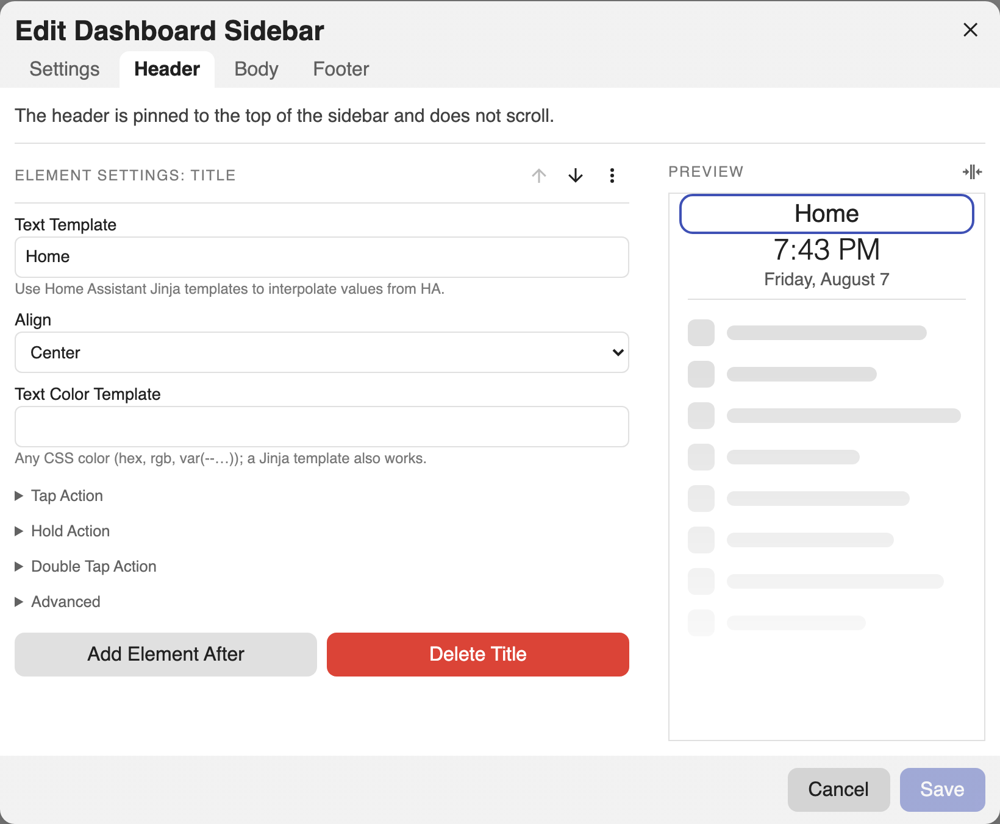
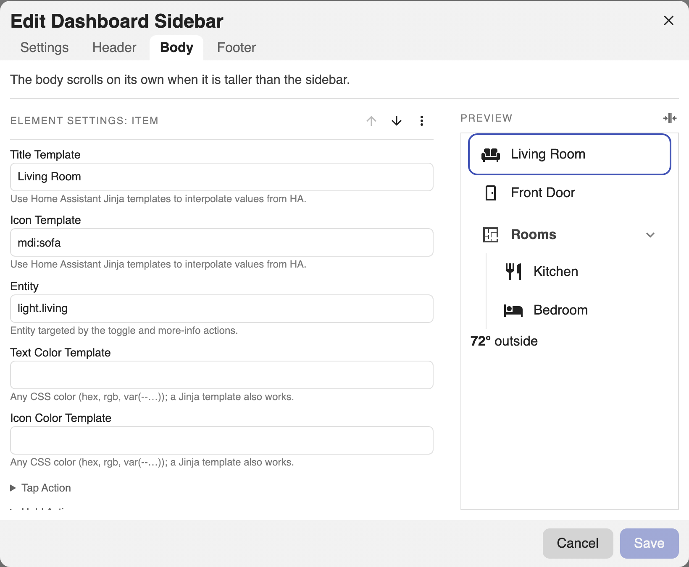
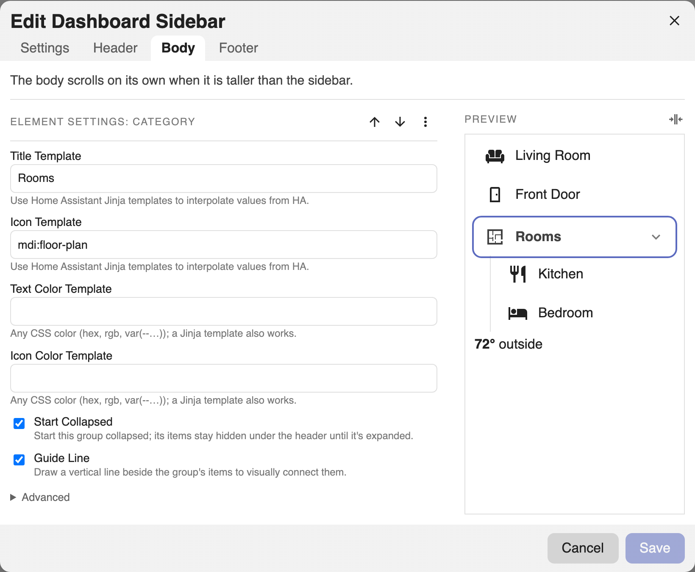
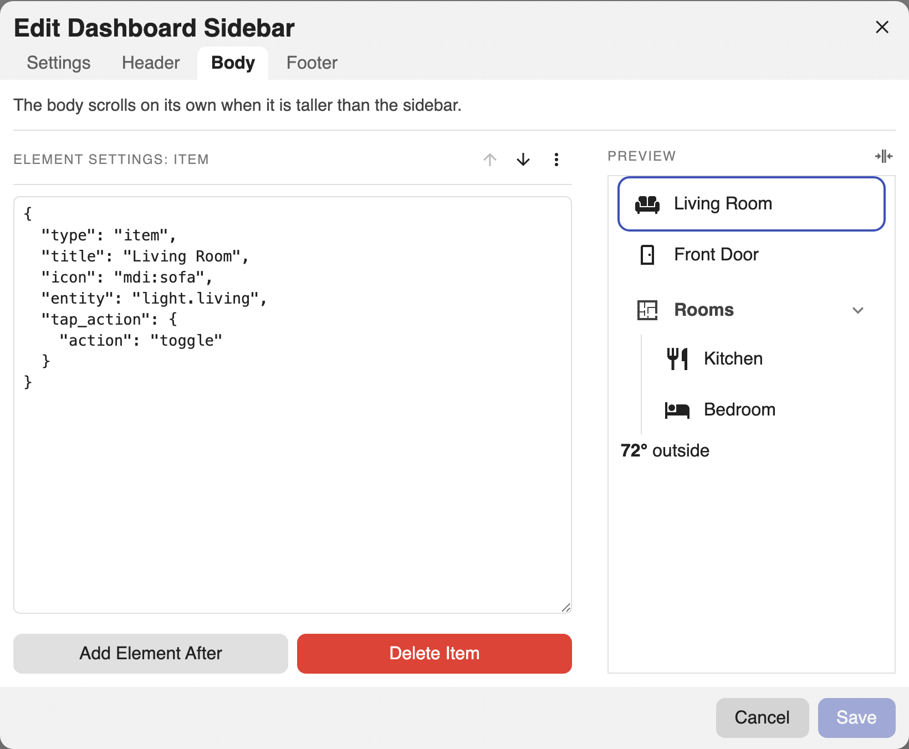

Elements¶
Header and body regions hold an ordered list of elements. Each has a type.
Common options live under each element's Advanced section in the editor: an
Abbreviation (the short glyph shown for an item or category when the sidebar
is collapsed and it has no icon) and Card Mod (advanced CSS styling, see
Styling). A class hook is also available in YAML; see
Styling.
Two ways to edit
Each element below has a Visual editor tab and a YAML tab for the same result. In the editor, pick a region tab (Header or Body), press +, choose the element type, then fill in its fields.
See the Config Reference for every field on every element.
Icons and entities
Icons use the Material Design Icons set, written mdi:name (for example
mdi:home). The editor has an icon picker, or browse names at
pictogrammers.com/library/mdi.
An entity is a device or sensor in Home Assistant (for example
light.kitchen); find its id under Settings > Devices & Services >
Entities.
Templating¶
- Title, item titles, icons, and color fields resolve to plain text, so only
Jinja applies (not markdown), e.g.
{{ states('sensor.temp') }}. - Markdown blocks and the markdown footer render through Home Assistant's markdown card, so they support markdown and Jinja.
Current user
Home Assistant's server-side templates do not reliably expose the current
user, so {{ user }} renders empty. The starter greeting bakes your name in
at creation instead.
Title¶
A heading of templatable text. Hidden while collapsed.
Add a Title element. Set Text (templatable) and Alignment. An optional Text Color lives under Advanced.

- type: title
text: Living Room
align: center # left | center | right
text_color: '{{ "tomato" if is_state("alarm.x","triggered") else "" }}'
Clock¶
A digital clock.
Add a Clock element and pick a Format preset (2:30 PM, 14:30,
2:30:39 PM, 14:30:39). A custom strftime pattern and a Timezone live
under Advanced → Custom Format.
- type: clock
format: '%H:%M' # preset or any strftime pattern; empty = 24h
timezone: America/New_York # optional; empty = system zone
align: center
text_color: var(--primary-color)
Date¶
A date block.
Add a Date element. The Format dropdown offers curated regional presets (ISO, US month-first, day-first, dotted European, plus short/long/full variants). A custom pattern and Timezone live under Advanced.
- type: date
format: '%A, %B %-d' # preset or strftime; empty = locale default
timezone: America/New_York
align: center
text_color: '#8ab4f8'
Divider¶
A horizontal rule.
Add a Divider element. An optional Color for the line lives under Advanced.
- type: divider
color: var(--divider-color) # optional line color; templatable
Item¶
A tappable row. Standalone in a region, or nested in a category.
Add an Item. Set Title, Icon, and an Entity (the target for toggle / more-info). Configure Tap, Hold, and Double Tap in their own sections (see Actions). Text/Icon Color, an Abbreviation (the collapsed glyph when there is no icon), and Card Mod live under Advanced.

- type: item
title: Front Door
icon: mdi:door # templatable; falls back to initials/abbr collapsed
entity: lock.front_door # target for toggle / more-info
text_color: '{{ "green" if is_state("lock.front_door","locked") else "red" }}'
icon_color: var(--primary-color)
tap_action:
action: toggle
# hold_action, double_tap_action (see Actions)
# Advanced: abbr (collapsed glyph when no icon), card_mod
See Actions for tap/hold/double-tap and the active-page highlight.
Category¶
A collapsible group of items, nested one level deep.
Add a Category. Set its Title and Icon, then add child Items inside it. Start Collapsed and Guide Line (the vertical guide beside the items) are toggles on the category. Categories cannot nest further.

- type: category
title: Rooms
icon: mdi:floor-plan
text_color: coral
icon_color: navy
start_collapsed: true # default true
guide_line: true # vertical guide beside the items; default true
items:
- title: Kitchen
tap_action: { action: navigate, navigation_path: /lovelace/kitchen }
- title: Bedroom
tap_action: { action: navigate, navigation_path: /lovelace/bedroom }
Collapsed, a category becomes an icon that opens a popover of its items.
Markdown¶
Markdown with Jinja, rendered by Home Assistant's markdown card. Hidden while
collapsed. (type: markdown.)
Add a Markdown element and write Content (markdown + Jinja). Set Alignment; Text Color lives under Advanced.
- type: markdown
content: |
**{{ states("sensor.temperature") }}°** outside
align: left
text_color: var(--secondary-text-color)
Card¶
Any Lovelace card, authored as YAML. Fills the sidebar width; keeps its own card
chrome. Validated live against Home Assistant's card registry. (type: card.)
Add a Card element and paste any Lovelace card config into its YAML field. It is validated live against Home Assistant's card registry.
- type: card
card:
type: gauge
entity: sensor.cpu
# card_mod: { style: 'ha-card { padding: 8px }' } # size/style via the card itself
Editing an element as YAML¶
Every element can be edited as YAML without leaving the visual editor: select it, open the ⋯ menu, and choose Edit As YAML. This is handy for pasting a config, or for fields the form does not expose. Choose Edit With UI to switch back.
